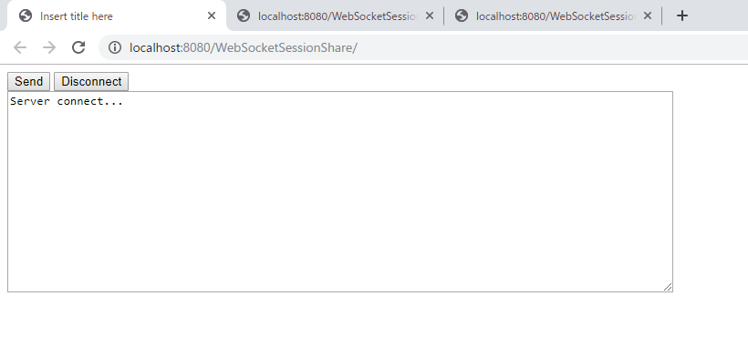

[Java] Servlet環境でWebSocket通信中、HttpSessionを取得する方法
こんにちは。明月です。
この投稿はJavaのServlet環境でWebSocket通信中、HttpSessionを取得する方法に関する説明です。
以前の投稿でWebSocketに関して説明したことがあります。
link - [Java] WebSocket (ウェブソケット)
link - [Java] WebSocketでWeb Sessionを使う方法(Broadcast)とウェブチャットの例
WebSocketとは初め接続することはHttpプロトコルでhandshake処理をしてヘッダでWebSocketなら接続を続けて保持することになるし、一般Http要請なら応答して接続を切断します。
WebSocketの要請は初め要請以外には続けて接続しているので、ソケットでメッセージを送受信するため、Httpクッキー情報を貰うタイミングがありません。
なので、初め接続する際にWebSocket sessionをキーにしてセッションオブジェクトを管理するリストにWeb sessionを格納します。その後、メッセージを受信する時に「@onMessage」関数が呼ばれたらWebsocket sessionでリストからsessionを取得して使ったらよいでしょう。
import javax.servlet.ServletContext;
import javax.servlet.http.HttpSession;
import javax.websocket.HandshakeResponse;
import javax.websocket.server.HandshakeRequest;
import javax.websocket.server.ServerEndpointConfig;
import javax.websocket.server.ServerEndpointConfig.Configurator;
public class HttpSessionConfigurator extends Configurator {
// configのプロパティにデータを格納するキー (セッション)
public static final String Session = "Session";
// configのプロパティにデータを格納するキー (コンテキスト)
public static final String Context = "Context";
// EndPointConfigに HttpSessionと HttpContextを格納する。
// RequestとResponseはHttpプロトコールで要請、応答する時に使うオブジェクトなので要らない。
@Override
public void modifyHandshake(ServerEndpointConfig config, HandshakeRequest request, HandshakeResponse response) {
// HttpRequestからセッションを受け取る。
HttpSession session = (HttpSession) request.getHttpSession();
// HttpSessionからはコンテキストを受け取る。
ServletContext context = session.getServletContext();
// configのプロパティに格納する。
config.getUserProperties().put(HttpSessionConfigurator.Session, session);
config.getUserProperties().put(HttpSessionConfigurator.Context, context);
}
}
WebSocket serverクラスを作成しましょう。
import java.util.Collections;
import java.util.HashMap;
import java.util.Map;
import javax.servlet.http.HttpSession;
import javax.websocket.EndpointConfig;
import javax.websocket.OnClose;
import javax.websocket.OnError;
import javax.websocket.OnMessage;
import javax.websocket.OnOpen;
import javax.websocket.Session;
import javax.websocket.server.ServerEndpoint;
// handshake設定を指定する。
// 初めにWebSocketの接続をすると、プロトコールのhandshake段階で接続ヘッダをチェックして「@onOpen」クラスが呼ばれる。
@ServerEndpoint(value = "/websocket", configurator = HttpSessionConfigurator.class)
public class WebSocket {
// WebSocket sessionをキーとしてconfigオブジェクト(Web SessionとContextがあるオブジェクト)をマップに管理する。
private Map<Session, EndpointConfig> configs = Collections.synchronizedMap(new HashMap<>());
// handshakeが終われば「@OnOpen」が呼ばれる。EndpointConfgのインスタンスはhandshakeクラスから設定されたconfigデータ。
@OnOpen
public void handleOpen(Session userSession, EndpointConfig config) {
// コンソールに接続ログを表示する。
System.out.println("client is now connected...");
// EndpointConfigのデータを管理マップに格納する。
if (!configs.containsKey(userSession)) {
// WebSocket sessionは各関数(@onMessage,@onError,@onClose)が呼ばれる時にパラメータから受け取られるので、
// キーとして使用できる。
configs.put(userSession, config);
}
}
// WebSocket serverにブラウザ(client)がメッセージを転送すれば呼ばれる関数。
@OnMessage
public String handleMessage(String message, Session userSession) {
// configマップからWebSocket sessionキーでconfigオブジェクトを取得する。
if (configs.containsKey(userSession)) {
EndpointConfig config = configs.get(userSession);
// HttpSessionConfiguratorから設定したsessionを取得する。
HttpSession session = (HttpSession) config.getUserProperties().get(HttpSessionConfigurator.Session);
// Web SessionからTestSessionキーでデータを取得する。(テスト用)
return "Session - " + (String) session.getAttribute("TestSession");
}
return "error";
}
// WebSocket serverにブラウザ(client)が切断すれば呼ばれる関数。
@OnClose
public void handleClose(Session userSession) {
// コンソールにメッセージを出力する。
System.out.println("client is now disconnected...");
// 接続が切断すればconfigマップからWebSocket sessionキーでデータを抜く。
if (configs.containsKey(userSession)) {
configs.remove(userSession);
}
}
// WebSocket serverにブラウザ(client)がエラーが発生すれば呼ばれる関数。
@OnError
public void handleError(Throwable t) {
// コンソールにエラーメッセージを表示する。
t.printStackTrace();
}
}
WebSocketを接続するようなhtmlドキュメントを作成しましょう。
<%@ page language="java" contentType="text/html; charset=UTF-8" pageEncoding="UTF-8"%>
<!DOCTYPE html>
<html>
<head><title>Insert title here</title></head>
<body>
<!-- メッセージを送信するボタン -->
<input onclick="sendMessage()" value="Send" type="button">
<!-- WebSocket終了(切断)するボタン -->
<input onclick="disconnect()" value="Disconnect" type="button">
<br />
<!-- コンソール役をするテキストアリア、受信メッセージも表示する。 -->
<textarea id="messageTextArea" rows="10" cols="50" readonly="readonly"></textarea>
<script type="text/javascript">
// 「WebSocketSessionShare」はプロジェクト名
// 「websocket」ホスト名
// WebSocketオブジェクト生成(接続開始)
var webSocket = new WebSocket("ws://localhost:8080/WebSocketSessionShare/websocket");
// コンソールのテキストアリア
var messageTextArea = document.getElementById("messageTextArea");
// WebSocketが接続成功になれば呼ばれる関数。
webSocket.onopen = function(message) {
// コンソールにメッセージ出力
messageTextArea.value += "Server connect...\n";
};
// WebSocketが切断なれば呼ばれる関数。
webSocket.onclose = function(message) {
// コンソールにメッセージ出力
messageTextArea.value += "Server Disconnect...\n";
};
// WebSocketからエラーが発生する時に呼ばれる関数。
webSocket.onerror = function(message) {
// コンソールにメッセージ出力
messageTextArea.value += "error...\n";
};
// WebSocketからメッセージを受け取ったら呼ばれる関数。
webSocket.onmessage = function(message) {
// コンソールにメッセージ出力
messageTextArea.value += "Recieve From Server => " + message.data+ "\n";
};
// Sendボタンを押下すると呼ばれる関数。
function sendMessage() {
// コンソールにメッセージ出力
messageTextArea.value += "Get Http Session!!";
// WebSocketにメッセージを送信する。
webSocket.send("Get");
}
// Disconnectボタンを押下すると呼ばれる関数。
function disconnect() {
// WebSocket切断
webSocket.close();
}
</script>
</body>
</html>
WebServerにセッションをテストするために、セッションにデータを格納するサーブレットとクリアするサーブレットを作成しましょう。
import java.io.IOException;
import javax.servlet.ServletException;
import javax.servlet.annotation.WebServlet;
import javax.servlet.http.HttpServlet;
import javax.servlet.http.HttpServletRequest;
import javax.servlet.http.HttpServletResponse;
// WebSessionにテストデータを格納するためのサーブレット。
@WebServlet("/SessionIn")
public class SessionIn extends HttpServlet {
private static final long serialVersionUID = 1L;
public SessionIn() {
super();
}
// メソッドGET方式で要請すれば呼ばれる関数。
protected void doGet(HttpServletRequest request, HttpServletResponse response)
throws ServletException, IOException {
// Query Stringは「param」キーでデータを取得する。
String param = request.getParameter("param");
// データが無い場合、「hello world」に基本データに設定する。
if (param == null || param.isEmpty()) {
param = "hello world";
}
// WebSessionに「TestSession」キーでデータを格納する。
request.getSession().setAttribute("TestSession", param);
// Web応答は「Session In OK」にする。
response.getWriter().append("Session In OK");
}
// メソッドPOST方式でも要請すれば呼ばれる関数。処理はGETと同じ。
protected void doPost(HttpServletRequest request, HttpServletResponse response)
throws ServletException, IOException {
doGet(request, response);
}
}
上のWebSocket serverでWebSessionを「TestSession」キーで取得しましたので、格納する時に「TestSession」キーで格納しました。
次はSessionをクリアするサーブレットを作成しましょう。
import java.io.IOException;
import javax.servlet.ServletException;
import javax.servlet.annotation.WebServlet;
import javax.servlet.http.HttpServlet;
import javax.servlet.http.HttpServletRequest;
import javax.servlet.http.HttpServletResponse;
// WebSessionをクリアするためのサーブレット。
@WebServlet("/SessionOut")
public class SessionOut extends HttpServlet {
private static final long serialVersionUID = 1L;
public SessionOut() {
super();
}
// メソッドGET方式で要請すれば呼ばれる関数。
protected void doGet(HttpServletRequest request, HttpServletResponse response)
throws ServletException, IOException {
// WebSessionからTestSessionキーのデータを初期化する。
request.getSession().setAttribute("TestSession", null);
// Web応答は「Session Clear」にする。
response.getWriter().append("Session Clear ");
}
// メソッドPOST方式でも要請すれば呼ばれる関数。処理はGETと同じ。
protected void doPost(HttpServletRequest request, HttpServletResponse response)
throws ServletException, IOException {
doGet(request, response);
}
}
ここまでWebSocket serverからWebSessionを取得する部分とテストするためのサーブレットまで作成しました。
ブラウザもWebSocket serverに接続する前にはHttpプロトコールで要請します。その時、Webページ要請かWebSocket接続かの判断することがhandshakeです。
なので、初めのHttpのプロトコールで要請する時に、サーブレットからRequestインスタンスをもらえるし、クッキーからセッションキーも取得ができるのでセッションの値の取得が可能です。
WebSocket serverにはhandshakeは最初に接続する時だけ行われることなので、WebSocket sessionをキーにしてマップにWebSessionインスタンスとContextインスタンスを格納しました。
そうすると、ブラウザからメッセージか来る時たびに接続ユーザのWebSessionのインスタンスを取得できます。

index.jspを接続しました。
index.jspにはWebSocketでWebSocket serverに接続します。
他のタブに「SessionIn」サーブレットを要請して「param」データを「Test OkOk!!!」というデータを送ります。
そうするとセッションに「TestSession」キーで「Test OkOK!!!」というデータが格納するでしょう。
index.jspページに戻ってきて「send」ボタンを押下しました。
そうするとWebSocket serverはセッションに格納された「TestSession」キーでデータをクライアントに送ります。上のイメージをみればサーバからデータを受信したことを確認できます。
今回は「SessionOut」サーブレットを要請してセッションをクリアしました。
また、index.jspページに戻って来て「send」ボタンを押下するとセッションが初期化されたことを確認できます。
ここまでJavaのServlet環境でWebSocket通信中、HttpSessionを取得する方法に関する説明でした。
ご不明なところや間違いところがあればコメントしてください。
- [Java] HttpConnectionを利用してウェブページを取得する方法2020/05/20 23:53:24
- [Java] Jsoupを利用してXMLファイル(HTML)を扱う方法2020/05/19 19:32:21
- [Java] 日付フォーマット(SimpleDateFormat)を使う方法2020/03/25 00:36:53
- [Java] サーブレット(Servlet)の環境でファイルアップロード(プログレスバーでファイルアップロード状態を表示する方法)する方法2020/03/24 00:48:21
- [Java] Spring環境でファイルアップロード(プログレスバーでファイルアップロード状態を表示する方法)する方法2020/03/22 23:15:12
- [Java] FTPに接続してファイルをダウンロード、アップロードする方法(FTPClient)2020/03/20 02:44:36
- [Java] JSPのSpring環境でschedulerのcronを使う方法2020/03/18 00:24:32
- [Java] POIを利用してExcelを扱う方法2020/03/17 01:48:00
- [Java] PDFを出力する方法(itextpdf)2020/03/13 00:47:31
- [Java] ログライブラリ(log4j)を使う方法2020/03/12 00:54:39
- [Java] Jsonタイプのデータを使う方法(Gsonライブラリ)2020/03/11 00:30:15
- [Java] Base64をエンコード、デコードする方法2020/03/09 10:24:01
- [Java] cmdコマンドを実行するための方法2020/03/06 18:01:10
- [Java] メール(javax.mail)を発送する方法2020/03/05 20:07:49
- [Java] クラス複製(Clonable, Reflection)2020/03/05 00:03:19
- [Python] 06. 関数(function) - インライン関数、callbak、ラムダ(lambda)そしてクロージャ2020/06/02 20:51:22
- [Python] 05. コンプリヘンション(Comprehension)を使用する方法2020/06/01 19:38:58
- [Python] 04. 制御文(if, while, for, break, continue)とインデント2020/05/29 21:09:08
- [Python] 03. Pythonでリスト(list)とタプル(tuple)、そしてディクショナリ(dictionary)、セット(set)2020/05/27 18:49:08
- [Python] 02. データタイプ、変数宣言そしてコメントする方法2020/05/26 18:16:52
- [Python] 01. Python3をインストールする方法(Anacondaインストール)2020/05/25 19:02:44
- [Java] HttpConnectionを利用してウェブページを取得する方法2020/05/20 23:53:24
- [Java] Jsoupを利用してXMLファイル(HTML)を扱う方法2020/05/19 19:32:21
- [C#] 非同期ソケット通信(IOCP)-APMパターン2020/05/18 18:45:37
- [C#] 非同期ソケット通信(IOCP)-EAPパターン2020/05/15 19:31:02
- [C#] ソケット(Socket)通信をする方法2020/05/13 17:37:13
- [C#] NPOIを利用してExcelを読み込んで出力する方法2020/05/08 10:43:52
- [C#] NPOIライブラリを利用してエクセルファイルを生成する方法2020/05/07 01:49:01
- [C#] Geckoライブラリを利用してウェブスクレイピングする方法2020/05/05 00:52:26
- [C#] PDFを作成する方法(iTextSharp)2020/05/03 10:22:40